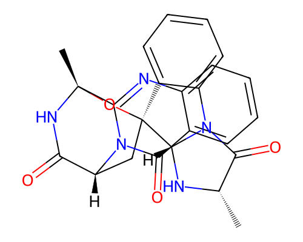

Aspergillus fumigatus SD-406
- Collection location
- East China Sea
- Substrate
- deep-sea sediment
- Reported coordinates
- 26.75833333, 121.33666667
DOI 10.3390/md20010004 ↗ · PubMed 35049858 ↗
pp1–10 Figure1, Table4 and source section
Recorded organism, strain, collection context and compound-linked source evidence.
A source profile groups recorded name variants. Primary-source review, strain identification and sequence verification are separate evidence decisions.
Compound activities are not automatically attributable to this strain, sample or source publication.
| Structure | Compound | Formula | MW (g/mol) | Reported source depth | Classification | Activity records | Admitted evidence rows |
|---|---|---|---|---|---|---|---|
 Structure image unavailable Structure image unavailable | 12,13-Dihydroxyfumitremorgin CConnections → | C22H25N3O5 | 411.458 g/mol | Alkaloid-Peptide | 1 | 0 | |
 Structure image unavailable | Fumiquinazoline CConnections → | C24H21N5O4 | 443.463 g/mol | Alkaloid | 12 | 1 | |
 Structure image unavailable Structure image unavailable | FUMITREMORGINConnections → | C22H25N3O3 | 379.46 g/mol | Alkaloid | 9 | 7 |
Up to two results per compound are shown. Open the compound record for all results, conditions and restrictions.
Shared cited references are prioritized where available. A shared reference does not establish a strain-specific assay or the same experimental sample.
| Product | Recorded results | Result evidence |
|---|---|---|
| 12,13-Dihydroxyfumitremorgin C | Pseudomonas aeruginosa; Vibrio alginolyticus; Edwardsiella tarda; Fusarium oxysporum; F. graminearum qualitative antimicrobial outcome · Table4脚注a报告2/3/5无活性；未列具体数值阈值，不将其他列的“-”脚注自动当作本化合物MIC>64或0 Evidence review pending Shared cited reference; experimental attribution unconfirmed | |
| Fumiquinazoline C | Pseudomonas aeruginosa; Vibrio alginolyticus; Edwardsiella tarda; Fusarium oxysporum; F. graminearum qualitative antimicrobial outcome · Table4脚注a报告2/3/5无活性；未列具体数值阈值，不将其他列的“-”脚注自动当作本化合物MIC>64或0 Evidence review pending Shared cited reference; experimental attribution unconfirmed Acetylcholinesterase (AChE) IC50 = 125.11 μM Evidence detailsPrimary result checkedOther cited reference for this compound | |
| FUMITREMORGIN | Pseudomonas aeruginosa; Vibrio alginolyticus; Edwardsiella tarda; Fusarium oxysporum; F. graminearum qualitative antimicrobial outcome · Table4脚注a报告2/3/5无活性；未列具体数值阈值，不将其他列的“-”脚注自动当作本化合物MIC>64或0 Evidence review pending Shared cited reference; experimental attribution unconfirmed ACHN Reported log10(GI50/M) = -4.2518 Evidence detailsOriginal dataset checkedOther cited reference for this compound |
Repeated source records are grouped with their associated compounds.
Associated compounds: Fumiquinazoline C, FUMITREMORGIN, 12,13-Dihydroxyfumitremorgin C
[ { "reported_name": "Fumitremorgin C", "full_InChIKey": "DBEYVIGIPJSTOR-FHWLQOOXSA-N", "public_identity_url": "https://www.ebi.ac.uk/chebi/searchId.do?chebiId=CHEBI%3A72763", "scope": "ChEBI name/fullkey supports C identity; original paper2. Not an independent atomwise acceptance." } ]